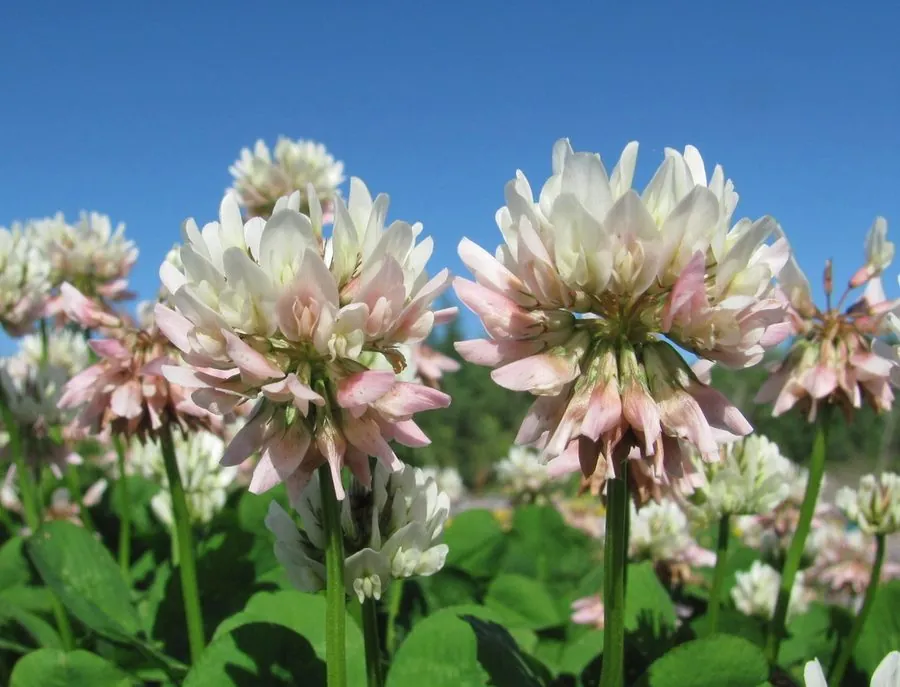

农作物与经济植物 · 植物界
白三叶 Trifolium repens

豆科车轴草属多年生草本，匍匐茎节节生根、花白色球状，是优良的草坪地被、牧草与固氮绿肥植物。
- 分类
- 门被子植物门纲木兰纲目豆目科豆科属车轴草属
- 栖息环境
- 温带湿润地区，耐寒、耐践踏、耐修剪，适应性强
- 地理分布
- 原产欧洲与西亚；中国南北各地及世界温带地区广泛栽培
- 保护级别
- IUCN 暂无评估；栽培极广，部分地区归化
物种志
白三叶为多年生草本，高 10–30 厘米，具匍匐茎，节上生根，形成密集草垫。叶为三出复叶，小叶倒卵形至心形，长 1–3 厘米，边缘具细齿，叶面常有白色“V”形斑纹。花序头状、球形，直径 1.5–2 厘米，花白色至淡粉色，花冠蝶形；荚果细小，内含 2–4 粒种子。
白三叶原产欧洲与西亚，现广泛栽培于世界温带地区，中国南北均有种植，耐寒、耐践踏、耐修剪，是草坪混播与果园生草的重要草种。它的根瘤能固氮，可改善土壤肥力；茎叶柔嫩，是牛、羊、兔的优质牧草；花期长，也是重要的蜜源植物。白三叶的匍匐茎能迅速覆盖地面，常用于护坡与水土保持。
形态与习性
- 株高10–30 厘米，具匍匐茎
- 花期4–7 月，花白色、球状
- 果期7–9 月，荚果细小
- 光照喜光，也耐半阴
- 水分喜湿润，耐短期积水
- 土壤不择土壤，以疏松的壤土为佳
- 主要用途草坪地被、牧草、绿肥与蜜源
趣味知识
- 白三叶的叶片上常有白色“V”形斑纹，是识别它的直观特征。
- 它的匍匐茎节节生根，一株白三叶可以蔓延成一大片草垫。
- 白三叶的根瘤能固氮，是果园生草与草坪混播的常用草种。
- 它的花球由许多蝶形小花组成，花期长，蜜源丰富。